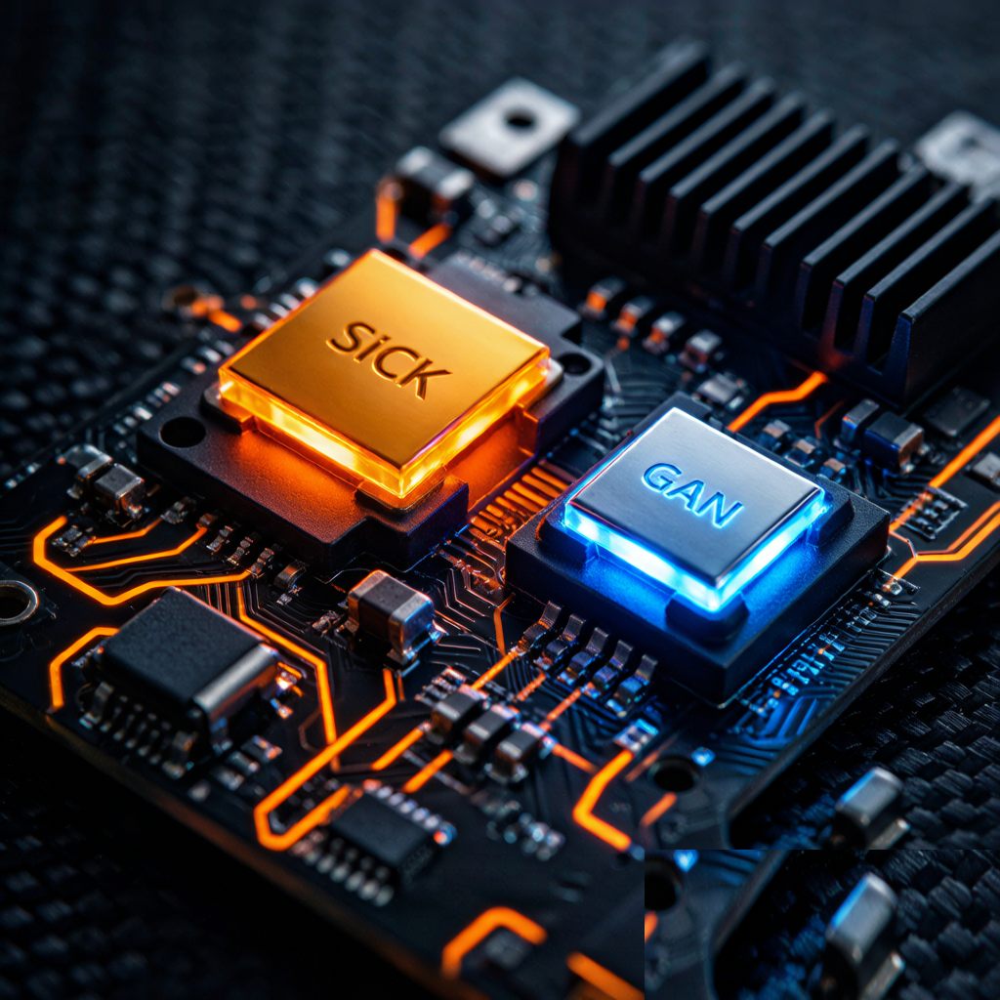
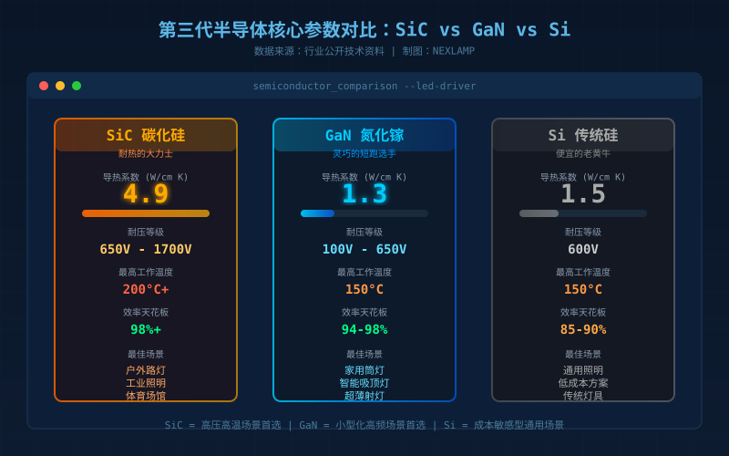
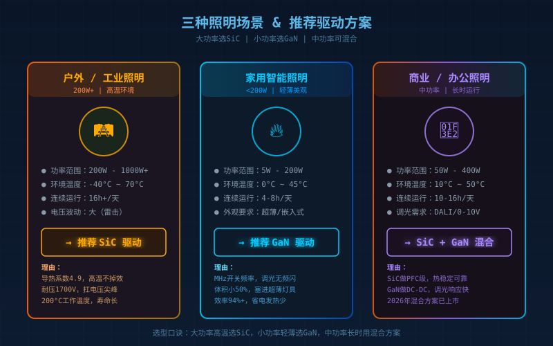

如果你这两年买过手机快充头，大概率已经见过"氮化镓(GaN)"这个词——小方块一样的充电器，体积比传统充电器小一半，功率反而更高。而现在，同样的技术变革正在LED照明行业上演。
2026年，随着莱福德、卓闻电源、麦格米特等企业相继推出搭载碳化硅(SiC)和氮化镓(GaN)的LED驱动电源，第三代半导体正式从电动汽车、快充领域"跨界"到照明行业。很多做工程和采购的朋友开始问了：SiC和GaN到底有什么区别？我的灯该选哪种？ 这篇文章一次说清楚。
先搞明白：什么叫"第三代半导体"？
打一个简单的比方。如果把电流比作水流，那么：
- 第一代硅(Si) 就是普通水管——能用，但水压高了容易爆，水流快了阻力大。
- 第二代砷化镓(GaAs) 是特种水管——性能好一些，但贵，主要用于高频通信。
- 第三代碳化硅(SiC)和氮化镓(GaN) 相当于高压合金管和超细高速管——一个耐高压耐高温，一个高频高速体积小。
LED驱动电源本质上就是一个"电的翻译官"：把220V交流电翻译成LED灯珠能用的低压直流电。这个"翻译"过程会有损耗（变成热量），谁翻译得高效、发热少、体积小，谁就是好驱动。而SiC和GaN就是在"翻译效率"上碾压传统硅材料的新选手。
SiC vs GaN：一张表看清核心区别

| 对比维度 | 碳化硅 SiC | 氮化镓 GaN | 传统硅 Si |
|---|---|---|---|
| 核心优势 | 耐高压、耐高温 | 超快开关、小型化 | 便宜、成熟 |
| 导热能力 | ⭐⭐⭐⭐⭐ (4.9) | ⭐⭐ (1.3) | ⭐⭐⭐ (1.5) |
| 开关速度 | 中等 | 极快(1MHz+) | 慢 |
| 耐压等级 | 650V–1700V | 100V–650V | 600V |
| 最高工作温度 | 200°C+ | 150°C | 150°C |
| 效率天花板 | 98%+ | 94–98% | 85–90% |
导热能力单位：W/cm·K，数值越大散热越好
记住一句话就够了：SiC是"耐热的大力士"，适合户外/工业等大功率高温场景；GaN是"灵巧的短跑选手"，适合需要做小做薄的消费级场景。 两者不是敌对关系，而是分工合作。
你的灯到底该选哪种？三个场景对号入座

场景一：户外路灯、工业照明、体育场馆（大功率+高温）→ 选SiC
这类场景功率通常200W起步，灯具常年暴露在户外，夏天灯壳温度可能超过70°C。传统硅基驱动在这个温度下效率下降明显，寿命严重缩水。SiC的导热能力是GaN的近4倍，在高温下效率几乎不掉，而且耐压冗余高，能扛住电网波动导致的电压尖峰。茂硕电源的X6N系列驱动甚至能在零下60°C正常工作——这种极端环境的可靠性，只有SiC能做到。
场景二：家用智能吸顶灯、筒灯、射灯（小功率+美观）→ 选GaN
家用灯具功率通常在200W以下，对体积和外观要求高。GaN驱动可以把电源模块做得非常薄，塞进超薄吸顶灯和窄筒灯里，让灯具设计不再被"驱动盒子大小"限制。而且GaN开关频率可达MHz级别，这意味着调光响应更快、不闪频——对智能照明体验提升明显。
场景三：商业照明、办公照明（中功率+长时运行）→ SiC和GaN都可以，看侧重点
如果你追求长期可靠性、设备连续开16小时以上不关，SiC的热稳定性更适合。如果你追求灯具轻薄好看、调光体验好，GaN更合适。2026年开始出现"SiC+GaN混合方案"的产品，用SiC做前级PFC、GaN做后级DC-DC，各取所长。
2026年的现实：SiC/GaN驱动贵不贵？
坦率说，目前SiC/GaN驱动的价格还是比传统硅基驱动贵。但随着国产SiC晶圆厂（基本半导体、英嘉通、泰科天润等）量产上量，价格在快速下降。行业预测，到2027-2028年，SiC驱动的价格溢价将缩小到20%以内。
作为普通消费者，你不需要纠结驱动里面到底是什么材料。 但如果你在选灯时可以问一句"这个灯用的什么驱动方案"，至少能分辨出认真做产品的品牌和糊弄事儿的廉价货。一款用了第三代半导体驱动的灯具，通常在效率、寿命、散热三个维度都更有保障。
总结
LED驱动电源从硅基到SiC/GaN的切换，不是营销噱头，而是实实在在的技术革命——就像手机从2G到5G、汽车从燃油到电动。2026年是这场变革在照明行业的"元年"，而真正受益的是每一个追求高品质照明的用户。
一句话记住：大功率高温选SiC，小功率轻薄选GaN，两者不是谁取代谁，是各取所长的好搭档。